1. Disconnect the ground cable from the battery.
2. Lift up the vehicle, then remove the rear wheels.
3. Disconnect the connector from the rear vehicle height sensor. (HID model, right side only)
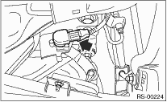
4. Remove the nuts that hold the lateral link and rear vehicle height sensor bracket. (HID model, right side only)
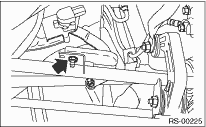
5. Remove bolt (A) and clip (B) fixing the rear vehicle height sensor bracket to the crossmember, then remove the rear vehicle height sensor assembly. (HID model, right side only)
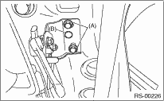
6. Lift the crimped section of axle nut.
7. While applying the parking brake, remove the axle nut using a socket wrench.
CAUTION:
Remove the axle nut while there is no load being applied to the axle. Failure to do so may damage the wheel bearings.
8. Return the parking brake lever and loosen the self-locking nut.
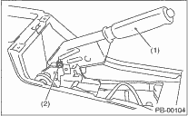
|
(1) |
Parking brake lever |
|
(2) |
Self-locking nut |
9. Remove the disc brake caliper from the back plate, and suspend it from strut using a piece of wire.
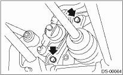
10. Remove the disc rotor from the hub.
NOTE:
If it is difficult to remove the disc rotor from the hub, drive an 8 mm bolt into the threaded end of rotor, and then remove the rotor.
11. Disconnect the parking brake cable end from the parking lever.
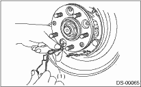
|
(1) |
Cable end |
12. Disconnect the rear stabilizer from the rear lateral link.
13. Remove the bolts which secure trailing link assembly to the rear housing.

14. Remove the bolts which secure the lateral assembly to the rear housing.

15. Remove the rear ABS wheel speed sensor from the back plate.

|
(1) |
ABS wheel speed sensor |
16. Disengage the BJ assembly from the hub splines, and remove the rear drive shaft assembly.
If it is hard to remove, use the ST.
| ST1 926470000 | AXLE SHAFT PULLER |
| ST2 28099PA110 | AXLE SHAFT PULLER PLATE |
CAUTION:
• Be careful not to damage the oil seal lip when removing the rear drive shaft.
• When rear drive shaft is to be replaced, replace inner oil seal with a new seal.
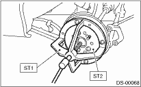
17. Remove the bolts which secure the rear housing to strut, and separate the two.
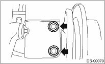
1. Disconnect the ground cable from the battery.
2. Lift up the vehicle, and then remove the rear wheels.
3. Lift the crimped section of axle nut.
4. While applying the parking brake, remove the axle nut using a socket wrench.
CAUTION:
Remove the axle nut while there is no load being applied to the axle. Failure to do so may damage the wheel bearings.
5. Return the parking brake lever and loosen the self-locking nut.
|
(1) |
Parking brake lever |
|
(2) |
Self-locking nut |
6. Remove the brake drum from hub.
7. If it is difficult to remove brake drum, remove the adjusting hole cover from the back plate, and then turn the adjusting screw using a flat tip screwdriver until the brake shoe separates from the drum.
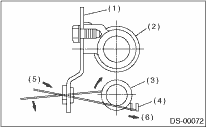
|
(1) |
Back plate |
|
(2) |
Wheel cylinder |
|
(3) |
Adjuster ASSY pole |
|
(4) |
Adjusting lever |
|
(5) |
Tightening direction |
|
(6) |
Press |
NOTE:
If it is difficult to remove the brake drum from the hub, drive an 8 mm of bolt into the threaded section of the drum, then remove the brake drum.
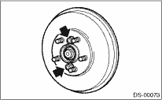
8. Using a flare-nut wrench, disconnect the brake hose from the wheel cylinder. Place a cover on the brake pipe attachment hole of the wheel cylinder, to prevent entry of foreign particles.
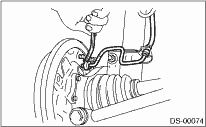
9. Cover the end of the brake pipe with a vinyl sheet, etc. to prevent brake fluid from leaking out.
10. Disconnect the parking brake cable end from the parking brake lever.
|
(1) |
Cable end |
11. Disconnect the rear stabilizer from the rear lateral link. Remove the bolts which secure trailing link assembly to the rear housing.
12. Remove the bolts which secure the lateral link assembly to the rear housing.
13. Remove the rear ABS wheel speed sensor from the back plate.
|
(1) |
ABS wheel speed sensor |
14. Disengage the BJ assembly from the housing splines, and remove the rear drive shaft assembly.
NOTE:
If it is hard to remove, use the ST.
| ST1 926470000 | AXLE SHAFT PULLER |
| ST2 28099PA110 | AXLE SHAFT PULLER PLATE |
CAUTION:
• Be careful not to damage the oil seal lip when removing the rear drive shaft.
• When rear drive shaft is to be replaced, replace inner oil seal with a new seal.
15. Remove the bolts which secure the rear housing to strut, and separate the two.